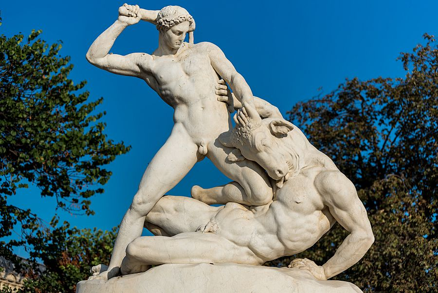
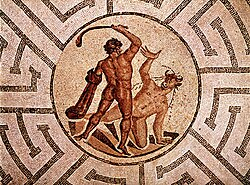

Vol. 1: Mitologia Griega
El Minotauro
En la mitología griega, el Minotauro era un monstruo con cuerpo de hombre y cabeza y rabo de toro. El Minotauro fue fruto de la unión de la reina cretense Pasífae con un magnífico toro. A causa de su aspecto monstruoso, el rey Minos ordenó al artesano Dédalo y a su hijo Ícaro que construyeran un enorme recinto, conocido como el Laberinto, para albergar a la bestia. El Minotauro permaneció encerrado en el Laberinto, alimentándose de muchachos y doncellas que le eran ofrecidos en sacrificio cada año. Con el tiempo, murió a manos del héroe ateniense Teseo.


La palabra Minotauro es un término compuesto del antiguo nombre griego Minos, o «Minos», y tauros, «toro». Por tanto, viene a significar el «toro de Minos». Pero el nombre de pila del Minotauro fue Asterión, en griego antiguo asterion, que significa «el estrellado», lo cual sugiere un vínculo con la constelación de Tauro.